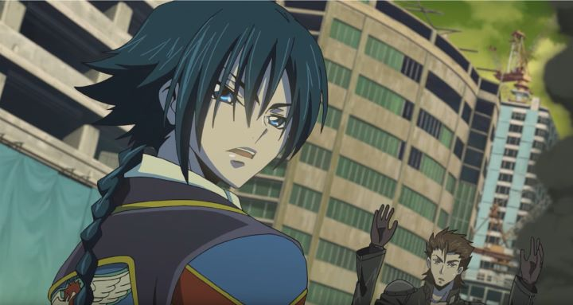

If you just started getting into anime in the late 2000's, you likely at least are aware of "Code Geass - Lelouch of the Rebellion." The 50-episode epic was an entertaining action thriller, featuring cool mech designs, attractive character designs, and a fantastic ending. Given the ending, most fans understood it was best to let the franchise die graecfully, no further stories needed to be told.Then "Code Geass - Akito the Exiled," a series of five hour-long theatrical OVA's, came along in 2015, a few years after their original reveal. It was set somewhere in between the events of season one and season two of the original show, featuring a entirely new cast of characters, with hints that they too might have access to the power of Geass. While sequels and prequels both can be justified, to have a side-story that doesn't have any clear direct effect on the main plot seems ill-advised. Who was this made for? And, more importantly, WOULD WE GET TO SEE OUR FAVORITE CHARACTER LELOUCH MAKE A CAMEO IN ANIMATED FORM ONE AGAIN?!?!?Impressively, "Akito the Exiled" is a successful production. It doesn't necessarily justify its existance, but it's take on its new characters and their relationships for and against each other make for compelling drama, enough so to feel invested in the new series. While the original two seasons were set largely in Japan, "Akito the Exiled" occurs in Europe, where countries are still putting up a strong fight against invading Britannian forces. When the E.U.'s forces seem doomed to fail, a new specialist team is formed: Leila, its commander, is a bright and confident leader from aristocratic roots. Akito, a mysterious and cold mech pilot with Japanese roots, is loyal to Leila and one of the most agile fighters. After the first film, the team is rounded out by a handful of Japanese terrorists caught and forced to fight as part of an ultimatum. They prepare a final strategy to bring success to their side, while Akito fights a unknown internal power that causes him to lose control when deep in battle, especially when catching view of his brother Shin, who reveals himself as a lead officer on the opposite side.Much of the series' enjoyment here is between the relationship between Akito and Shin. Flashbacks eventually show that Shin had the power of Geass, and used it to see his father and his entire Japanese family die. He tried the same to Akito, but to Shin's confusion, Akito doesn't kill himself. The two separate, and Akito clearly has mental trauma from the event and conflicting emotions towards his brother, shaping his view of the world and driving his desire to kill Shin in mad rage. Shin himself is a fascinating antagonist for his calculating strategies and lack of sympathy to human lives to reach his goals. These are good examples of complex history being put to good use to develop the characters. The final episode in particular sees a dramatic and statisfying conclusion to this conflict. Leila, while naive at times, comes up with clever tactics that help us believe they have a fighting chance. In the style of the original series, the new OVA's offer enough twists and cliffhangers to keep the viewer engaged. However, when "Akito the Exiled" tries to shoehorn its connections to "Lelouch of the Rebellion," the threads run loose a bit. There are two main issues: Geass, and Lelouch himself. The power of Geass is referenced and is clearly at play somewhere, but as fans may know, the way the power manifests itself and the abilities it provides is different for each user. "Akito the Exiled" never confirms exactly who has Geass, how they came to have it, and how their powers work, making it seem like a convenient catch-all reason for heroes to survive or for certain events to inevitably happen. Ultimately, the existance of Geass in this story feels irrelevant, and the story might have been better without it entirely. The same could be said for Lelouch Lamperouge; while it was considered a spoiler and kept under wraps for a long time, it is blantantly obvious that Lelouch DOES appear in "Akito the Exiled," but disguised as a new and brainwashed character being used as a pawn for the Britiannian empire, under the watchful and hate-filled eyes of promoted soldier Suzaku Kururugi. The show doesn't use his existance very well, drawing out Lelouch's secret identity for far too long, and ultimately using him for a political twist that doesn't factor heavily into the main plot, either to "Akito the Exiled" or "Lelouch of the Rebellion." The script would have benefited from a rewrite, cutting potentially a full episode out of the five, and perhaps considering not to brand the show under the "Code Geass" franchise. Also, the nice ending for the main characters feel cliche and not appropriate for the story leading up to it: the only reason I can imagine they are left alive and living carefree in the woods is because they might make a cameo appearance in yet another spin-off (as of 2018, a full decade after "Lelouch of the Rebellion" ended, a continuation series is indeed planned). Regarding the animation, while the character design style is largely unchanged (a good thing), the animation has improved thanks to the theatrical format. Action scenes are fluid and dynamic. The fights between mech robots feature 3D models and moving camera shots, using a style of shading that uses sharp outlines to look like a comic book. I admit this was a good choice in comparison to the 2D animation from the old show, robots and non-organic characters in general benefit in 3D, and the OVA's use these benefits to full effect. The music has been updated to be a bit more jazzy during the action scenes, while still having the loud and energetic feel that the old series had, a inspired fit for the action. While the voice acting misses the classic scheming Lelouch for most of the runtime, Akito and Shin are played well by their English dub actors to keep your attention. Strangely, the English dub tries to provide an accent to the European characters, while all the Japanese characters continue to sound like standard Texas voice actors... watching this alongside other anime dubs might give the uneducated the wrong idea if they want to visit Japan.It's understandable that fans of the original series would be suspicious of "Akito the Exiled," but they don't have much to worry about. If they are willing to put any hopes to see old characters away (and are able to ignore any instance when they DO appear in order to appreciate the main store), then one will find an exciting action thriller adventure featuring well-animated mech fights in an alternate version of future Europe.
- "Ani" More reviews can be found at : https://2danicritic.github.io/ Previous review: review_Cleopatra Next review: review_Code_Geass_-_Lelouch_of_the_Rebellion